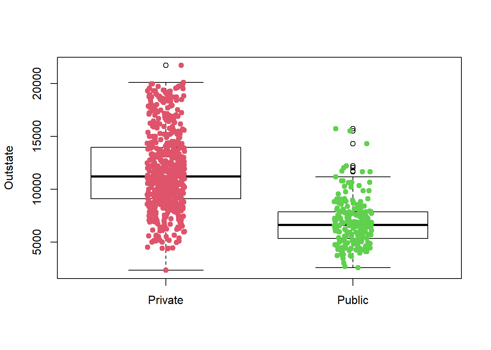
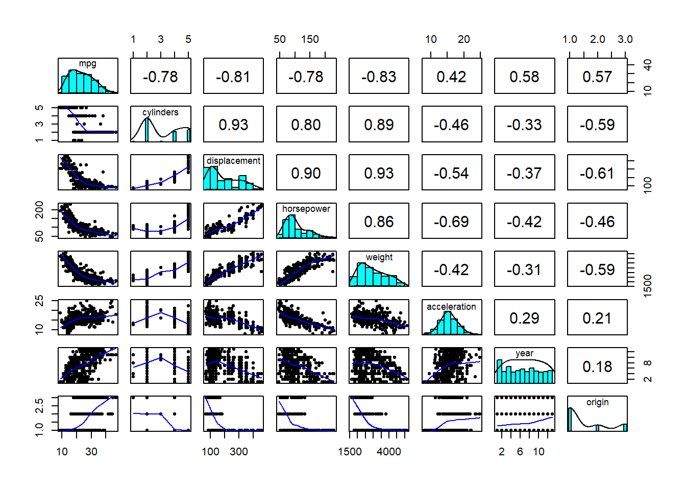
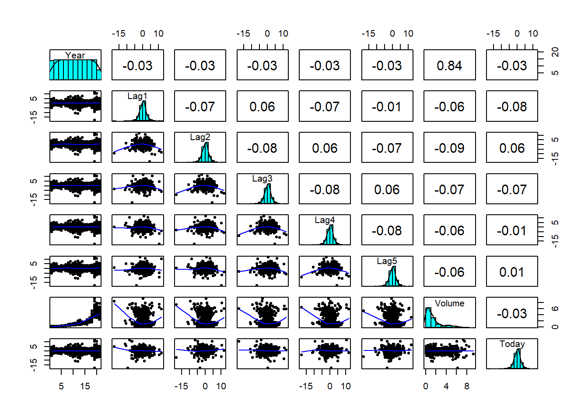

Obs Distance Y
1 5 1.414214 Green
2 6 1.732051 Red
3 2 2.000000 Red
4 4 2.236068 Green
5 1 3.000000 Red
6 3 3.162278 RedStatistical Learning
Summary
Statistical learning aims to estimate the relationship between predictors (\(X = X_1, X_2, ..., X_p\)) and a quantitative response (\(Y\), expressed as \(Y = f(X) + \epsilon\), where \(f\) is an unknown function and \(\epsilon\) represents random error. This estimation is categorized as supervised (predicting outputs from inputs) or unsupervised (analyzing inputs without corresponding outputs). Supervised learning serves two primary purposes: prediction, where the goal is to accurately estimate \(f\) when it’s unavailable, and inference, where the focus is on understanding the nature of the relationship between \(f\) and \(X\). Prediction accuracy is limited by reducible error (which can be minimized through better estimation of \(f\)) and irreducible error (inherent randomness and unmeasured influences).
Methods for estimating \(f\) are either parametric (assuming a specific form for \(f\), resulting in less flexible but more interpretable models) or non-parametric (making no assumptions about \(f\), leading to more flexible but less interpretable models). Problems are classified as regression (quantitative response) or classification (qualitative response). In regression, model accuracy is assessed by minimizing test mean squared error (MSE), which involves balancing the bias and variance of the estimate. Generally, more flexible methods increase variance and decrease bias, and finding the optimal balance minimizes test MSE.
In classification, model performance is evaluated using the test error rate. The Bayes classifier, a theoretical benchmark, minimizes this rate by assigning observations to the class with the highest conditional probability. The k-Nearest Neighbors (KNN) algorithm provides a practical approach by estimating these probabilities based on the K nearest training points. The flexibility of KNN is controlled by the value of K: small K leads to high variance and low bias, while large K results in low variance and high bias. Balancing this trade-off is crucial to avoid overfitting (high variance) or underfitting (high bias).
Exercises
Conceptual
Question 1
For each of parts (a) through (d), indicate whether we would generally expect the performance of a flexible statistical learning method to be better or worse than an inflexible method. Justify your answer.
- The sample size \(n\) is extremely large, and the number of predictors \(p\) is small.
A flexible method will be better because the model does not need to work hard to find patterns in the data hence reducing the likelihood of overfitting. Additionally, a flexible method in this situation will results in a lower test mean squared error (MSE), as the reduction in bias compensates for the increased variance.
- The number of predictors \(p\) is extremely large, and the number of observations \(n\) is small.
In this situation an Inflexible method preferable because there is higher chance for the model to pickup patterns that may not exist in the test data.
- The relationship between the predictors and response is highly non-linear.
A flexible method is preferred because an inflexible method will lead to high bias.
- The variance of the error terms, i.e. \(\sigma^2 = Var(\epsilon)\), is extremely high.
In this case, an Inflexible method will perform better. With a flexible method, it may be difficult to differentiate the true pattern from the noise in the data. Flexible method have a higher variance because they fit more data.
Question 2
Explain whether each scenario is a classification or regression problem, and indicate whether we are most interested in inference or prediction. Finally, provide \(n\) and \(p\).
- We collect a set of data on the top 500 firms in the US. For each firm we record profit, number of employees, industry and the CEO salary. We are interested in understanding which factors affect CEO salary.
- sample size: 500
- predictors: profit, number of employees, and industry (3)
- regression problem because the response is quantitative
- We are most interested in making inference.
- We are considering launching a new product and wish to know whether it will be a success or a failure. We collect data on 20 similar products that were previously launched. For each product we have recorded whether it was a success or failure, price charged for the product, marketing budget, competition price, and ten other variables.
- sample size: 20
- predictors: 13
- classification problem because the response is qualitative (success or failure)
- We are interested in making predictions.
- We are interested in predicting the % change in the USD/Euro exchange rate in relation to the weekly changes in the world stock markets. Hence we collect weekly data for all of 2012. For each week we record the % change in the USD/Euro, the % change in the US market, the % change in the British market, and the % change in the German market.
- sample size: 52
- predictors: 3
- regression problem because the response is quantitative
- We are interested in making prediction.
Question 3
We now revisit the bias-variance decomposition.
Provide a sketch of typical (squared) bias, variance, training error, test error, and Bayes (or irreducible) error curves, on a single plot, as we go from less flexible statistical learning methods towards more flexible approaches. The x-axis should represent the amount of flexibility in the method, and the y-axis should represent the values for each curve. There should be five curves. Make sure to label each one.
Explain why each of the five curves has the shape displayed in part (a).
- Squared Bias: Decreases as model flexibility increases since more flexible methods are better at capturing complex patterns in the data.
- Variance: Increases with greater flexibility, as flexible models are more sensitive to variations in the training data.
- Training Error: Decreases with increasing flexibility because more complex models can closely fit the training data.
- Test Error: Initially decreases with flexibility due to reduced bias but eventually increases as overfitting leads to higher variance.
- Bayes Error: Remains constant, as it is independent of the model’s complexity and reflects the inherent noise in the data.
Question 4
You will now think of some real-life applications for statistical learning.
- Describe three real-life applications in which classification might be useful. Describe the response, as well as the predictors. Is the goal of each application inference or prediction? Explain your answer.
Email Classification (Spam or Not Spam):
Variables (\(p\)): Certain keywords, email structure, sender information
Aim: Prediction
Factors Associated with Winning an Election:
Variables (\(p\)): Campaign budget, market trends, poll results, etc.
Aim: Inference
Food Spoilage (Healthy or Not Healthy for Consumption)
Variables (\(p\)): Color, texture, smell, etc.
Aim: Prediction
- Describe three real-life applications in which regression might be useful. Describe the response, as well as the predictors. Is the goal of each application inference or prediction? Explain your answer.
Analyzing the Effect of Marketing Budget on Sales Response: Total revenue
Variables (\(p\)): Marketing budget allocated to different channels (e.g., social media, TV ads, print media), time of year, and product price.
Aim: Inference
Predicting Housing Prices Response Variable: Sale price of a house.
Predictors: Square footage, number of bedrooms, number of bathrooms, location etc
Aim: Prediction
- Describe three real-life applications in which cluster analysis might be useful.
- Genomic data analysis for example RNA seq.
- finding categories in illnesses, cells, or organisms
Question 5
What are the advantages and disadvantages of a very flexible (versus a less flexible) approach for regression or classification? Under what circumstances might a more flexible approach be preferred to a less flexible approach? When might a less flexible approach be preferred?
Inflexible methods are more interpretable and are generally preferred in cases with small \(n\) (sample size) and large \(p\) (number of predictors). However, they may suffer from high bias when the true underlying function is non-linear. Flexible methods, while capable of capturing non-linear patterns, are prone to overfitting, leading to high variance in error. In situations with a large \(n\) and small \(p\), flexible methods are preferred.
Question 6
Describe the differences between a parametric and a non-parametric statistical learning approach. What are the advantages of a parametric approach to regression or classification (as opposed to a non-parametric approach)? What are its disadvantages?
Parametric methods are more interpretable because they rely on a predefined model to generate the response. They also tend to perform better than non-parametric methods in high-dimensional settings, as they require estimating fewer parameters. However, a key disadvantage is that the model may not accurately reflect reality. If the assumed model is far from the true underlying relationship, the resulting estimates can be poor.
In contrast, non-parametric methods are highly flexible and can adapt to a wide range of underlying patterns. However, this flexibility comes at a cost: they require a larger number of observations to produce accurate estimates, as they do not rely on a small set of parameters and are more prone to overfitting when data is limited
Question 7
The table below provides a training data set containing six observations, three predictors, and one qualitative response variable.
| Obs. | \(X_1\) | \(X_2\) | \(X_3\) | \(Y\) |
|---|---|---|---|---|
| 1 | 0 | 3 | 0 | Red |
| 2 | 2 | 0 | 0 | Red |
| 3 | 0 | 1 | 3 | Red |
| 4 | 0 | 1 | 2 | Green |
| 5 | -1 | 0 | 1 | Green |
| 6 | 1 | 1 | 1 | Red |
Suppose we wish to use this data set to make a prediction for \(Y\) when \(X_1 = X_2 = X_3 = 0\) using \(K\)-nearest neighbors.
- Compute the Euclidean distance between each observation and the test point, \(X_1 = X_2 = X_3 = 0\). \[ \text{Distance} = \sqrt{(X_{1_{\text{obs}}} - 0)^2 + (X_{2_{\text{obs}}} - 0)^2 + (X_{3_{\text{obs}}} - 0)^2} \]
What is our prediction with \(K = 1\)? Why?
Our prediction will be
Greenbecause it have the smallest distance (obs. 5)What is our prediction with \(K = 3\)? Why?
When \(K = 3\) our prediction will be
Redbecause it is the majority (i.e, 2 Red and 1 Green).If the Bayes decision boundary in this problem is highly non-linear, then would we expect the best value for \(K\) to be large or small? Why?
If the Bayes decision boundary is highly non-linear, a smaller \(k\) is better. This is because smaller \(k\) will capture the non-linear patterns in data. A large \(k\) may lead to underfiting since the true boundary is highly non-linear.
Applied
library(knitr)
library(tidyverse)
library(psych)
library(ISLR2) Question 8
This exercise relates to the College data set, which can be found in the file College.csv. It contains a number of variables for 777 different universities and colleges in the US. The variables are
Private: Public/private indicatorApps: Number of applications receivedAccept: Number of applicants acceptedEnroll: Number of new students enrolledTop10perc: New students from top 10% of high school classTop25perc: New students from top 25% of high school classF.Undergrad: Number of full-time undergraduatesP.Undergrad: Number of part-time undergraduatesOutstate: Out-of-state tuitionRoom.Board: Room and board costsBooks: Estimated book costsPersonal: Estimated personal spendingPhD: Percent of faculty with Ph.D.’sTerminal: Percent of faculty with terminal degreeS.F.Ratio: Student/faculty ratioperc.alumni: Percent of alumni who donateExpend: Instructional expenditure per studentGrad.Rate: Graduation rate
Before reading the data into R, it can be viewed in Excel or a text editor.
- Use the
read.csv()function to read the data intoR. Call the loaded datacollege. Make sure that you have the directory set to the correct location for the data.
college <- read.csv("College.csv")- Look at the data using the
View()function. You should notice that the first column is just the name of each university. We don’t really wantRto treat this as data. However, it may be handy to have these names for later. Try the following commands:
rownames(college) <- college[, 1]
View(college)You should see that there is now a row.names column with the name of each university recorded. This means that R has given each row a name corresponding to the appropriate university. R will not try to perform calculations on the row names. However, we still need to eliminate the first column in the data where the names are stored. Try
college <- college [, -1]
View(college)Now you should see that the first data column is Private. Note that another column labeled row.names now appears before the Private column. However, this is not a data column but rather the name that R is giving to each row.
Use the
summary()function to produce a numerical summary of the variables in the data set.Use the
pairs()function to produce a scatter plot matrix of the first ten columns or variables of the data. Recall that you can reference the first ten columns of a matrix A usingA[,1:10].Use the
plot()function to produce side-by-side boxplots ofOutstateversusPrivate.Create a new qualitative variable, called
Elite, by binning theTop10percvariable. We are going to divide universities into two groups based on whether or not the proportion of students coming from the top 10% of their high school classes exceeds 50%.
Elite <- rep("No", nrow(college))
Elite[college$Top10perc > 50] <- "Yes"
Elite <- as.factor(Elite)
college <- data.frame(college, Elite)Use the summary() function to see how many elite universities there are. Now use the plot() function to produce side-by-side boxplots of Outstate versus Elite.
Use the
hist()function to produce some histograms with differing numbers of bins for a few of the quantitative variables. You may find the commandpar(mfrow=c(2,2))useful: it will divide the print window into four regions so that four plots can be made simultaneously. Modifying the arguments to this function will divide the screen in other ways.Continue exploring the data, and provide a brief summary of what you discover.
# First column(i.e, Private) is excluded since it is qualitative
pairs(college[, 2:11],
cex = 0.2,
col = 4,
cex.labels = 0.6, # Size of diagonal texts
font.labels = 2) # Font style of diagonal textsschool_type <- ifelse(college$Private == "Yes", "Private", "Public")
school_type <- as.factor(school_type)
plot(college$Outstate ~ factor(school_type),
col = "white",
xlab = "",
ylab = "Outstate")
stripchart(college$Outstate ~ factor(school_type),
method = "jitter",
pch = 19,
col = 2:4,
vertical = TRUE,
add = TRUE)
par(mfrow = c(2,2))
bin_values <- c(10, 20, 30, 50)
lapply(bin_values, function(n) {
hist(log10(college$Enroll),
breaks = n,
col = 4,
main = paste("Bins =", n),
xlab = "log(Enroll)")
})Question 9
This exercise involves the Auto data set studied in the lab. Make sure that the missing values have been removed from the data.
data <- read.table("Auto.data", header = TRUE, na.strings = "?")
data <- na.omit(data)
data$cylinders <- as.factor(data$cylinders)
data$origin <- as.factor(data$origin)
data$year <- as.factor(data$year)
str(data)'data.frame': 392 obs. of 9 variables:
$ mpg : num 18 15 18 16 17 15 14 14 14 15 ...
$ cylinders : Factor w/ 5 levels "3","4","5","6",..: 5 5 5 5 5 5 5 5 5 5 ...
$ displacement: num 307 350 318 304 302 429 454 440 455 390 ...
$ horsepower : num 130 165 150 150 140 198 220 215 225 190 ...
$ weight : num 3504 3693 3436 3433 3449 ...
$ acceleration: num 12 11.5 11 12 10.5 10 9 8.5 10 8.5 ...
$ year : Factor w/ 13 levels "70","71","72",..: 1 1 1 1 1 1 1 1 1 1 ...
$ origin : Factor w/ 3 levels "1","2","3": 1 1 1 1 1 1 1 1 1 1 ...
$ name : chr "chevrolet chevelle malibu" "buick skylark 320" "plymouth satellite" "amc rebel sst" ...
- attr(*, "na.action")= 'omit' Named int [1:5] 33 127 331 337 355
..- attr(*, "names")= chr [1:5] "33" "127" "331" "337" ...- Which of the predictors are quantitative, and which are qualitative?
Quantitative: mpg, cylinders, displacement, horsepower, weight, acceleration.
Qualitative: name, year, origin.
- What is the range of each quantitative predictor? You can answer this using the
range()function.
sapply(data[, c(1,3,4,5,6)], range) mpg displacement horsepower weight acceleration
[1,] 9.0 68 46 1613 8.0
[2,] 46.6 455 230 5140 24.8- What is the mean and standard deviation of each quantitative predictor?
data[, c(1,3,4,5,6)] |>
pivot_longer(everything()) |>
group_by(name) |>
summarise(
Mean = mean(value),
SD = sd(value)
) |>
knitr::kable()| name | Mean | SD |
|---|---|---|
| acceleration | 15.54133 | 2.758864 |
| displacement | 194.41199 | 104.644004 |
| horsepower | 104.46939 | 38.491160 |
| mpg | 23.44592 | 7.805008 |
| weight | 2977.58418 | 849.402560 |
- Now remove the 10th through 85th observations. What is the range, mean, and standard deviation of each predictor in the subset of the data that remains?
data[-(10:85), c(1,3,4,5,6)] |>
pivot_longer(everything()) |>
group_by(name) |>
summarise(
Range = diff(range(value)),
Mean = mean(value),
SD = sd(value)
) |>
knitr::kable()| name | Range | Mean | SD |
|---|---|---|---|
| acceleration | 16.3 | 15.72690 | 2.693721 |
| displacement | 387.0 | 187.24051 | 99.678367 |
| horsepower | 184.0 | 100.72152 | 35.708853 |
| mpg | 35.6 | 24.40443 | 7.867283 |
| weight | 3348.0 | 2935.97152 | 811.300208 |
- Using the full data set, investigate the predictors graphically, using scatterplots or other tools of your choice. Create some plots highlighting the relationships among the predictors. Comment on your findings.
pairs.panels(data[1:8], ellipses = FALSE)
There are both positive and negative correlation between the variables.
- Suppose that we wish to predict gas mileage (
mpg) on the basis of the other variables. Do your plots suggest that any of the other variables might be useful in predictingmpg? Justify your answer.
Yes, since other variables are correlated. However, horsepower, weight and displacement are highly related.
Question 10
This exercise involves the Boston housing data set.
- To begin, load in the
Bostondata set. TheBostondata set is part of theISLR2library in R.
Now the data set is contained in the object Boston.
View(Boston)Read about the data set:
?BostonHow many rows are in this data set? How many columns? What do the rows and columns represent?
dim(Boston)[1] 506 13- Make some pairwise scatterplots of the predictors (columns) in this data set. Describe your findings.
pairs.panels(Boston[1:7], ellipses = FALSE, cex.labels = 1)- Are any of the predictors associated with per capita crime rate? If so, explain the relationship.
cor.plot(Boston, xlas = 2, main = "Correlation plot")Per capita crime shows a moderately positive correlation with both
radandtax.
- Do any of the census tracts of Boston appear to have particularly high crime rates? Tax rates? Pupil-teacher ratios? Comment on the range of each predictor.
# top 5% of crime,tax,and pupil-teacher ratios
cat("High crime:", sum(Boston$crim > quantile(Boston$crim, 0.95)), "\n") High crime: 26 cat("High tax:", sum(Boston$tax > quantile(Boston$tax, 0.95)), "\n")High tax: 5 cat("Pupil-teacher ratio:", sum(Boston$ptratio > quantile(Boston$ptratio, 0.95)),"\n")Pupil-teacher ratio: 18 - How many of the census tracts in this data set bound the Charles river?
sum(Boston$chas==1)[1] 35- What is the median pupil-teacher ratio among the towns in this data set?
median_ptratio <- median(Boston$ptratio)
cat("Median pupil-teacher ratio:", median_ptratio, "\n")Median pupil-teacher ratio: 19.05 - Which census tract of Boston has lowest median value of owner-occupied homes? What are the values of the other predictors for that census tract, and how do those values compare to the overall ranges for those predictors? Comment on your findings.
# whichsuburbs that have the lowest median property values.
which(Boston$medv == min(Boston$medv))
# Values of other predictors for suburb 406
Boston[406,]
range(Boston$crim)There are two suburbs that have the lowest median property values. crime is negatively correlated with median property value.
- In this data set, how many of the census tract average more than seven rooms per dwelling? More than eight rooms per dwelling? Comment on the census tracts that average more than eight rooms per dwelling.
cat("More than 7 rooms:",sum(Boston$rm > 7),"\n")More than 7 rooms: 64 cat("More than 8 rooms:", sum(Boston$rm > 8), "\n")More than 8 rooms: 13 Making summaries:
tracts_more_than_8 <- Boston[Boston$rm > 8, ]
# Reshape data to long format using pivot_longer()
data_long <- tracts_more_than_8 |>
pivot_longer(cols = -rm, names_to = "Predictor", values_to = "Value")
# Create boxplots with facet_wrap
ggplot(data_long, aes(x = Predictor, y = Value, fill = Predictor)) +
geom_boxplot(outlier.color = "red", outlier.size = 1.5) +
facet_wrap(~ Predictor, scales = "free", ncol = 4) + # Each plot gets its own scale
theme_minimal() +
labs(title = "Boxplots for Predictors with More Than 8 Rooms",
x = "Predictors",
y = "Values") +
theme(axis.text.x = element_blank(), # Remove x-axis text (not meaningful here)
axis.ticks.x = element_blank(),
strip.text = element_text(size = 10, face = "bold"))
Linear Regression
Exercises
Conceptual
Applied
Classification
Exercises
Conceptual
- Using a little bit of algebra, prove that (4.2) is equivalent to (4.3). In other words, the logistic function representation and logit representation for the logistic regression model are equivalent.
The logistic function is define as
\[ p(X) = \frac{e^{\beta_o + \beta_1X}}{1\;+ e^{\beta_o + \beta_1X}}\\ \tag{1}\]
Rearranging terms,
\[\begin{gather*} e^{\beta_o + \beta_1X} = p(X) + p(X)\cdot{ e^{\beta_o + \beta_1X}}\\ p(X) = e^{\beta_o + \beta_1X} - p(X) \cdot e^{\beta_o + \beta_1X}\\ e^{\beta_o + \beta_1X} \cdot [1 - p(X)] = p(X)\\ \end{gather*}\]
Therefore the logit is representated as
\[ \frac{p(X)}{1 - p(X)} = e^{\beta_o + \beta_1X} \tag{2}\]
- It was stated in the text that classifying an observation to the class for which (4.17) is largest is equivalent to classifying an observation to the class for which (4.18) is largest. Prove that this is the case. In other words, under the assumption that the observations in the kth class are drawn from a N(µk,σ2) distribution, the Bayes classifier assigns an observation to the class for which the discriminant function is maximized.
\[ p_k(x) = \frac{\pi_k\frac{1}{\sqrt{2\pi\sigma}} \cdot \exp(-\frac{1}{2\sigma^2}(x - \mu_k)^2)} {\sum_{l=1}^k \pi_l\frac{1}{\sqrt{2\pi\sigma}} \cdot \exp(-\frac{1}{2\sigma^2}(x - \mu_l)^2)} \tag{3}\]
The discriminant function is
\[ \delta_k(x) = x.\frac{\mu_k}{\sigma^2} - \frac{\mu_k^2}{2\sigma_2} + \log(\pi_k) \tag{4}\]
To show Equation 3 is equals to Equation 4, we first assume \(\sigma_1^2\;=\;...\;=\sigma_k^2\). Hence,
\[ p_k(x) = \frac{\pi_k \exp\left(-\frac{1}{2\sigma^2}(x - \mu_k)^2\right)} {\sum_{l=1}^k \pi_l \exp\left(-\frac{1}{2\sigma^2}(x - \mu_l)^2\right)} \]
Next, we take the \(\log(p_K(X))\) to linearized the function. \[ \log(p_k(x)) = \log(\frac{\pi_k \exp\left(-\frac{1}{2\sigma^2}(x - \mu_k)^2\right)}{\sum_{l=1}^k \pi_l \exp\left(-\frac{1}{2\sigma^2}(x - \mu_l)^2\right)}) \] Rearranging terms
\[ \log(p_k(x)) = \log(\pi_k) - \frac{1}{2\sigma^2}(x - \mu_k)^2 - \log\left(\sum_{l=1}^k \pi_l \exp\left(-\frac{1}{2\sigma^2}(x - \mu_l)^2\right)\right) \]
To maximize over \(k\), any term that’s independent of \(k\) is ignored
\[\begin{align} f &= \log(\pi_k) - \frac{1}{2\sigma^2} (x^2 - 2x\mu_k + \mu_k^2) \\ &= \log(\pi_k) - \frac{x^2}{2\sigma^2} + \frac{x\mu_k}{\sigma^2} - \frac{\mu_k^2}{2\sigma^2} \\ \end{align}\]
Since \(\frac{x^2}{2\sigma^2}\) is also independent of \(k\), it is ignored in order to maximize over \(k\)
\[ \log(\pi_k) + \frac{x\mu_k}{\sigma^2} - \frac{\mu_k^2}{2\sigma^2} \]
- To Do
We now examine the differences between LDA and QDA.
(a). If the bayes decision boundary is linear, do we expect LDA or QDA to perform better on the training set? On the test set?
QDA been the more flexible model will perform better on the training set, but worse on the test set. On the test set, QDA will overfit the data because the true decision boundary is linear.
(b). If the Bayes decision boundary is non-linear, do we expect LDA or QDA to perform better on the training set? On the test set?
In this situation since the decision boundary is non-linear, QDA will perform better in both data sets. A linear model will underfit in this case.
(c). In general, as the sample size \(n\) increases, do we expect the test prediction accuracy of QDA relative to LDA to improve, decline, or be unchanged? Why?
As sample size increase, QDA will improve because there is more data to fit and the low bias will offset increase in variance.
(d). True or False: Even if the Bayes decision boundary for a given problem is linear, we will probably achieve a superior test error rate using QDA rather than LDA because QDA is flexible enough to model a linear decision boundary. Justify your answer.
False. In this case, QDA will overfit the data.
- Suppose we collect data for a group of students in a statistics class with variables \(X_1 =\) hours studied, \(X_2 =\) undergrad GPA, and \(Y =\) receive an A. We fit a logistic regression and produce estimated coefficient, \(\hat\beta_0 = -6\), \(\hat\beta_1 = 0.05\), \(\hat\beta_2 = 1\).
(a). Estimate the probability that a student who studies for 40h and has an undergrad GPA of 3.5 gets an A in the class.
\[ p(X) = \frac{e^{-6 + 0.05X_1 + X_2}}{1 + e^{-6 + 0.05X_1 + X_2}} \]
when \(X_1 = 40\) and \(X_2 = 3.5\), \(p(X) = 0.38\)
- How many hours would the student in part (a) need to study to have a 50% chance of getting an A in the class?
\[\begin{gather} \log\left(\frac{p(X)}{1-p(x)}\right) = -6 + 0.05X_1 + X_2 \\ \log\left(\frac{0.5}{1-0.5}\right) = -6 + 0.05X_1 + 3.5 \\ \end{gather}\]
Therefore, solving the equation \(0 = −6 + 0.05X_1 + 3.5\), \(X_1 = 50\) hours.
- Suppose that we wish to predict whether a given stock will issue a dividend this year (“Yes” or “No”) based on \(X\), last year’s percent profit. We examine a large number of companies and discover that the mean value of \(X\) for companies that issued a dividend was \(\bar{X} = 10\), while the mean for those that didn’t was \(\bar{X} = 0\). In addition, the variance of \(X\) for these two sets of companies was \(\hat{\sigma}^2 = 36\). Finally, 80% of companies issued dividends. Assuming that \(X\) follows a normal distribution, predict the probability that a company will issue a dividend this year given that its percentage profit was \(X = 4\) last year.
Hint: Recall that the density function for a normal random variable is \(f(x) =\frac{1}{\sqrt{2\pi\sigma^2}}e^{-(x-\mu)^2/2\sigma^2}\). You will need to use Bayes’ theorem.
Value of companies issuing a dividend (D) = \(D \sim \mathcal{N}(10, 36)\).
Value \(v\) for companies not issuing a dividend \((D^c)\) = \(D^c \sim \mathcal{N}(0, 36)\) and \(p(D) = 0.8\).
Bayes theorem:
\[\begin{align} P(D|X) &= \frac{P(D) \cdot{} P(X|D)}{P(D) \cdot{} P(X|D) + P(D^c) \cdot{} P(X|D^c)} \\ \end{align}\]
Substitute the Gaussian likelihoods into Bayes theorem
\[\begin{align} P(D|X) &= \frac{P(D) \cdot{} \frac{1}{\sqrt{2\pi\sigma^2}} e^{-(x-\mu_D)^2/2\sigma^2}} {P(D) \cdot{} \frac{1}{\sqrt{2\pi\sigma^2}} e^{-(x-\mu_D)^2/2\sigma^2} + P(D^c) \cdot{} \frac{1}{\sqrt{2\pi\sigma^2}} e^{-(x-\mu_{D^c})^2/2\sigma^2}} \\ \end{align}\]
Factor out \(\frac{1}{\sqrt{2\pi\sigma^2}}\) from the numerator and denominator, which cancels out:
\[\begin{align} P(D|X) &= \frac{P(D) \cdot{} e^{-(x-\mu_D)^2/2\sigma^2}} {P(D) \cdot{} e^{-(x-\mu_D)^2/2\sigma^2} + P(D^c) \cdot{} e^{-(x-\mu_{D^c})^2/2\sigma^2}} \\ \end{align}\]
Substitute the given probabilities and means:
\[\begin{align} P(D|X) &= \frac{0.8 \times e^{-(4-10)^2/(2 \times 36)}} {0.8 \times e^{-(4-10)^2/(2 \times 36)} + 0.2 \times e^{-(4-0)^2/(2 \times 36)}} \\ &= \frac{0.8 \cdot e^{-1/2}}{0.8 \cdot e^{-1/2} + 0.2 \cdot e^{-2/9}} \\ \end{align}\]
exp(-0.5) * 0.8 / (exp(-0.5) * 0.8 + exp(-2/9) * 0.2)[1] 0.7518525
- Suppose that we take a data set, divide it into equally-sized training and test sets, and then try out two different classification procedures. First we use logistic regression and get an error rate of 20% on the training data and 30% on the test data. Next we use 1-nearest neighbors (i.e. \(K = 1\)) and get an average error rate (averaged over both test and training data sets) of 18%. Based on these results, which method should we prefer to use for classification of new observations? Why?
Logistic regression will perform better because it has a lower test error rate. For \(K = 1\), the training error rate is always zero because the closest point is always the training point itself, so the model will never make a mistake on the training set. Given that the average error rate for 1-NN is 18%, this implies a test error rate of 36%. Logistic regression, with a test error rate of 30%, is therefore the better choice.
- This problem has to do with odds.
- On average, what fraction of people with an odds of 0.37 of defaulting on their credit card payment will in fact default?
\[ \frac{p(x)}{1 - P(x)} = odd\\ \] \[\begin{equation} p(x) = \frac{odd}{1 + odd}\\ \end{equation}\]
\[\begin{equation} p(x) = \frac{0.37}{1 + 0.37} = 0.27 \end{equation}\]
- Suppose that an individual has a 16% chance of defaulting on her credit card payment. What are the odds that she will default?
\[0.16 / (1 - 0.16) = 0.19\]
- To Do
- To Do
- Suppose that you wish to classify an observation \(X \in \mathbb{R}\) into
applesandoranges. You fit a logistic regression model and find that\[ \hat{Pr}(Y=orange|X=x) = \frac{\exp(\hat\beta_0 + \hat\beta_1x)}{1 + \exp(\hat\beta_0 + \hat\beta_1x)} \]
Your friend fits a logistic regression model to the same data using the softmax formulation in (4.13), and finds that
\[ \hat{Pr}(Y=orange|X=x) = \frac{\exp(\hat\alpha_{orange0} + \hat\alpha_{orange1}x)} {\exp(\hat\alpha_{orange0} + \hat\alpha_{orange1}x) + \exp(\hat\alpha_{apple0} + \hat\alpha_{apple1}x)} \]
- What is the log odds of
orangeversusapplein your model?
The log odds (\(\frac{p(x)}{1 - P(x)}\)) in my model will be \(\hat\beta_0 + \hat\beta_1x\)
- What is the log odds of
orangeversusapplein your friend’s model?
Log odds of our friend model:
\[ (\hat\alpha_{orange0} - \hat\alpha_{apple0}) + (\hat\alpha_{orange1} - \hat\alpha_{apple1})x \]
- Suppose that in your model, \(\hat\beta_0 = 2\) and \(\hat\beta = −1\). What are the coefficient estimates in your friend’s model? Be as specific as possible.
The coefficient estimate in my friend’s model:
- \(\hat\alpha_{orange0} -\hat\alpha_{apple0} = 2\)
- \(\hat\alpha_{orange1} - \hat\alpha_{apple1} = -1\).
- Now suppose that you and your friend fit the same two models on a different data set. This time, your friend gets the coefficient estimates \(\hat\alpha_{orange0} = 1.2\), \(\hat\alpha_{orange1} = −2\), \(\hat\alpha_{apple0} = 3\), \(\hat\alpha_{apple1} = 0.6\). What are the coefficient estimates in your model?
The coefficients in my model would be \(\hat\beta_0 = 1.2 - 3 = -1.8\) and \(\hat\beta_1 = -2 - 0.6 = -2.6\)
- Finally, suppose you apply both models from (d) to a data set with 2,000 test observations. What fraction of the time do you expect the predicted class labels from your model to agree with those from your friend’s model? Explain your answer.
They should agree everytime (i.e, pridictions and log odd between any pair of classes will remain the same, regardless of coding). The cofficient will be different because of the choice of baseline.
Applied
- This question should be answered using the
Weeklydata set, which is part of theISLR2package. This data is similar in nature to theSmarketdata from this chapter’s lab, except that it contains 1,089 weekly returns for 21 years, from the beginning of 1990 to the end of 2010.
- Produce some numerical and graphical summaries of the
Weeklydata. Do there appear to be any patterns?
library(ISLR2) # data sets
library(tidyverse)
library(psych) # for correlation plots
library(MASS) # for lda() and qda()
library(class) # for knn()
library(e1071) # for naiveBayes()
data("Weekly")
attach(Weekly)str(Weekly)'data.frame': 1089 obs. of 9 variables:
$ Year : num 1990 1990 1990 1990 1990 1990 1990 1990 1990 1990 ...
$ Lag1 : num 0.816 -0.27 -2.576 3.514 0.712 ...
$ Lag2 : num 1.572 0.816 -0.27 -2.576 3.514 ...
$ Lag3 : num -3.936 1.572 0.816 -0.27 -2.576 ...
$ Lag4 : num -0.229 -3.936 1.572 0.816 -0.27 ...
$ Lag5 : num -3.484 -0.229 -3.936 1.572 0.816 ...
$ Volume : num 0.155 0.149 0.16 0.162 0.154 ...
$ Today : num -0.27 -2.576 3.514 0.712 1.178 ...
$ Direction: Factor w/ 2 levels "Down","Up": 1 1 2 2 2 1 2 2 2 1 ...Weekly$Year <- as.factor(Weekly$Year)
pairs.panels(Weekly[1:8], cex.labels = 1, ellipses = FALSE)
# total number of times the market had a positive or negative return
table(Weekly$Direction)
Down Up
484 605 There is a strong positive correlation between the volume of shares traded and the year. From 2005 to 2010, the volume of shares began increasing exponentially. Additionally, between 1990 and 2010, the market had a total of 605 positive returns and 484 negative returns, respectively.
- Use the full data set to perform a logistic regression with
Directionas the response and the five lag variables plusVolumeas predictors. Use the summary function to print the results. Do any of the predictors appear to be statistically significant? If so, which ones?
glm.fit <- glm(Direction ~ Lag1 + Lag2 + Lag3 + Lag4 + Lag5 + Volume,
family = binomial)
summary(glm.fit)$coef Estimate Std. Error z value Pr(>|z|)
(Intercept) 0.26686414 0.08592961 3.1056134 0.001898848
Lag1 -0.04126894 0.02641026 -1.5626099 0.118144368
Lag2 0.05844168 0.02686499 2.1753839 0.029601361
Lag3 -0.01606114 0.02666299 -0.6023760 0.546923890
Lag4 -0.02779021 0.02646332 -1.0501409 0.293653342
Lag5 -0.01447206 0.02638478 -0.5485006 0.583348244
Volume -0.02274153 0.03689812 -0.6163330 0.537674762Among all the predictors, only Lag2 is statistically significant.
- Compute the confusion matrix and overall fraction of correct predictions. Explain what the confusion matrix is telling you about the types of mistakes made by logistic regression.
glm.prob <- predict(glm.fit, type = "response")
glm.pred <- ifelse(glm.prob > 0.5, "Up", "Down")
table(glm.pred, Direction) Direction
glm.pred Down Up
Down 54 48
Up 430 557# fraction of predictions which the prediction was correct
mean(glm.pred == Direction)[1] 0.5610652# training error rate:
mean(glm.pred != Direction)[1] 0.4389348The logistic regression model have an error rate of 43.8%. The logistic regression model have underwhelming p-values and perhaps removing variables that are not significant (useful) may improve the model. The model is also overly optimistic because the model was train and tested on the same data. > d. Now fit the logistic regression model using a training data period from 1990 to 2008, with Lag2 as the only predictor. Compute the confusion matrix and the overall fraction of correct predictions for the held out data (that is, the data from 2009 and 2010).
train.data <- Weekly[Year < 2009, ]
test.data <- Weekly[Year > 2008, ]
glm.fit <- glm(Direction ~ Lag2, family = binomial,
data = train.data)
summary(glm.fit)$coef Estimate Std. Error z value Pr(>|z|)
(Intercept) 0.20325743 0.06428036 3.162046 0.00156665
Lag2 0.05809527 0.02870446 2.023911 0.04297934glm.prob <- predict(glm.fit, newdata = test.data, type = "response")
glm.pred <- ifelse(glm.prob > 0.5, "Up", "Down")
table(glm.pred, test.data$Direction)
glm.pred Down Up
Down 9 5
Up 34 56mean(glm.pred == test.data$Direction)[1] 0.625# Test error rate
mean(glm.pred != test.data$Direction)[1] 0.375The model improved with Lag2 as the only the predictor. Test error rate is 37.5% which is better than random guessing.
- Repeat (d) using LDA.
# lda() is part of the MASS library
lda.fit <- lda(Direction ~ Lag2, data = train.data)
plot(lda.fit)
lda.pred <- predict(lda.fit, newdata = test.data)
names(lda.pred)[1] "class" "posterior" "x" table(lda.pred$class, test.data$Direction)
Down Up
Down 9 5
Up 34 56# test error rate
mean(lda.pred$class != test.data$Direction)[1] 0.375
- Repeat (d) using QDA.
qda.fit <- qda(Direction ~ Lag2, data = train.data)
qda.pred <- predict(qda.fit, newdata = test.data)
table(qda.pred$class, test.data$Direction)
Down Up
Down 0 0
Up 43 61# test error rate
mean(qda.pred$class != test.data$Direction)[1] 0.4134615
- Repeat (d) using KNN with \(K = 1\).
train <- (Year < 2009)
train.Direction <- Weekly$Direction[train] # vector for the train class labels
test.Direction <- Weekly$Direction[!train]
# knn() is part of the 'Class' library
set.seed(1)
knn.pred <- knn(Weekly[train, "Lag2", drop = FALSE],
Weekly[!train, "Lag2", drop = FALSE],
train.Direction, k = 1)
table(knn.pred, test.Direction) test.Direction
knn.pred Down Up
Down 21 30
Up 22 31# test error rate
mean(knn.pred != test.Direction)[1] 0.5
- Repeat (d) using naive Bayes.
nb.fit <- naiveBayes(Direction ~ Lag1 + Lag2, data = train.data)
nb.pred <- predict(nb.fit, test.data)
table(nb.pred, test.data$Direction)
nb.pred Down Up
Down 3 8
Up 40 53# test error rate
mean(nb.pred != test.data$Direction)[1] 0.4615385
- Which of these methods appears to provide the best results on this data?
Logistic regression and linear discreminant analyisis methods provide the best results on the Weekly data.
- Experiment with different combinations of predictors, including possible transformations and interactions, for each of the methods. Report the variables, method, and associated confusion matrix that appears to provide the best results on the held out data. Note that you should also experiment with values for \(K\) in the KNN classifier.
Citation
BibTeX citation:
@online{jallow2024,
author = {Jallow, Abdoulie},
title = {An {Introduction} to {Statistical} {Learning}},
date = {2024-11-14},
url = {https://jallow-code.github.io/posts/2024-11-14-statistical-learning/},
langid = {en}
}
For attribution, please cite this work as:
Jallow, Abdoulie. 2024. “An Introduction to Statistical
Learning.” November 14, 2024. https://jallow-code.github.io/posts/2024-11-14-statistical-learning/.